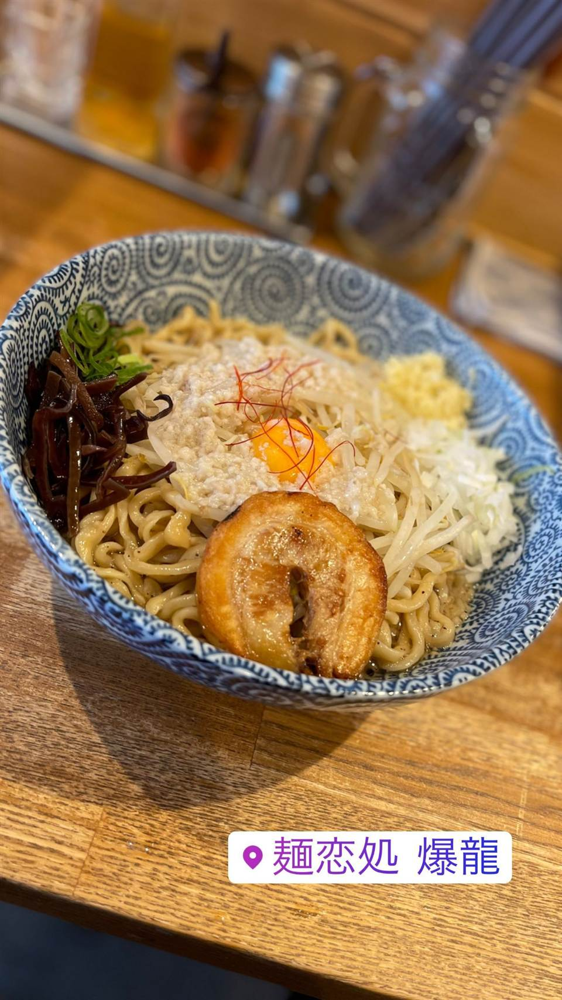

★20麺恋処 爆龍（はぜりゅう）
動物系に味噌を効かせた濃厚醤油の中華そば
麺恋処 爆龍
代々木の人気店「いそじ」や新橋「き楽」と同じ「麺恋処」グループの一店。動物系に味噌の風味を利かせた濃厚醤油スープと、浅草開化楼の平打ち麺を使った中華そば・まぜそばが看板。

REVIEWS
みんなの声
90.970ラーメンDB3.52食べログ
「リピーター続出の焙煎味噌そば」に注目
- 焙煎味噌そばは生姜とニンニクが効いた濃厚な味わいでリピーターが多いという声がある
- ワンタンの美味しさや店主夫婦の雰囲気の良さを評価する声もある
- 回転が悪く待ち時間が長いという不満やチャーシューの薄さを惜しむ声もある
ラーメンデータベース 口コミ88件・最新 2026-06
| 創業 | 2015年2月10日創業 |
|---|---|
| 系譜 | 代々木の人気店「麺恋処 いそじ」、新橋「麺恋処 き楽」と同じ「麺恋処」グループの一店 |
| 看板 | 中華そば・まぜそば |
| こだわり | 動物系だしに味噌の風味を効かせた濃厚醤油スープで、背脂たっぷり・生姜とニンニクが効いた味わい。麺は浅草開化楼特製の平打ち麺を使用 |
| 予算 | 昼 ¥1,000～¥1,999 夜 ¥1,000～¥1,999 |
| 場所 | 武蔵小山駅 東京都品川区小山（武蔵小山駅徒歩5分） |
| 注意 | カウンター10席ほどの小さな店で、看板犬がいる |
食べたもの：ラーメン / まぜそば
NEARBY
近い店・同じ系統の店
-
 ★1
まぜそば・油そば 旗の台駅
麺家 ぶらいとん
「無頼豚」の当て字を持つ、行列必至の油そばが看板
昼 ¥1,000～¥1,999 夜 ¥1,000～¥1,999
★1
まぜそば・油そば 旗の台駅
麺家 ぶらいとん
「無頼豚」の当て字を持つ、行列必至の油そばが看板
昼 ¥1,000～¥1,999 夜 ¥1,000～¥1,999
-
 ★21
まぜそば・油そば 亀戸
DURAMENTEI（ドゥラメンテイ）
白醤油と黒醤油、選べる2種スープと自家製ワンタン
昼 ¥1,000～¥1,999 夜 ¥1,000～¥1,999
★21
まぜそば・油そば 亀戸
DURAMENTEI（ドゥラメンテイ）
白醤油と黒醤油、選べる2種スープと自家製ワンタン
昼 ¥1,000～¥1,999 夜 ¥1,000～¥1,999
-
 ★30
まぜそば・油そば 稲荷町
さんじ
豪州でお好み焼き店を営んだ店主の自家焙煎煮干しラーメン
昼 ～¥999 夜 ¥1,000～¥1,999
★30
まぜそば・油そば 稲荷町
さんじ
豪州でお好み焼き店を営んだ店主の自家焙煎煮干しラーメン
昼 ～¥999 夜 ¥1,000～¥1,999
-
 ★31
まぜそば・油そば 亀戸駅
しののめヌードル
淡海地鶏と干し椎茸出汁、手もみ自家製麺の油そば
昼 ¥1,000～¥1,999 夜 ¥1,000～¥1,999
★31
まぜそば・油そば 亀戸駅
しののめヌードル
淡海地鶏と干し椎茸出汁、手もみ自家製麺の油そば
昼 ¥1,000～¥1,999 夜 ¥1,000～¥1,999
-
 ★40
まぜそば・油そば 明治神宮前
バサノバ 原宿店（BASSANOVA）
和出汁とスパイスを合わせたグリーンカレーソバ
昼 ¥1,000～¥1,999 夜 ¥2,000～¥2,999
★40
まぜそば・油そば 明治神宮前
バサノバ 原宿店（BASSANOVA）
和出汁とスパイスを合わせたグリーンカレーソバ
昼 ¥1,000～¥1,999 夜 ¥2,000～¥2,999
-
 ★42
まぜそば・油そば 仙川駅
ラーメン めじ 仙川店
めじろ台店で20年学んだ店主のカレー脂トッピング
昼 ～¥999 夜 ～¥999
★42
まぜそば・油そば 仙川駅
ラーメン めじ 仙川店
めじろ台店で20年学んだ店主のカレー脂トッピング
昼 ～¥999 夜 ～¥999